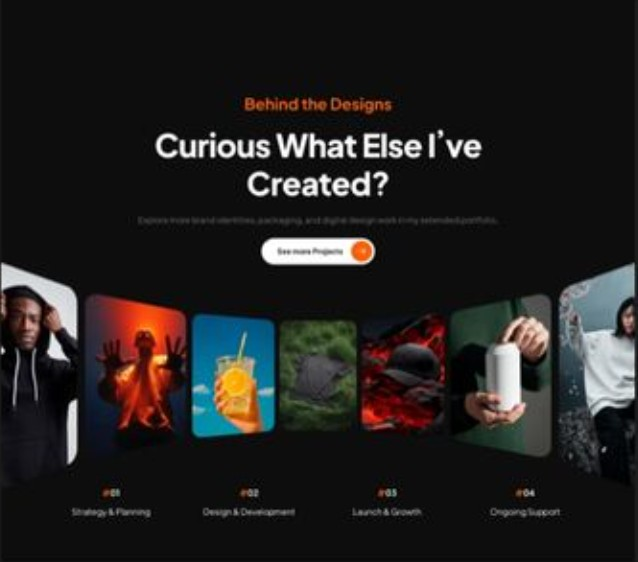

Un hero plus marquant
Un visuel fort dès l’entrée, avec une sensation plus éditoriale et plus mode.

Overview
Cette version met davantage l’accent sur la mise en scène du projet, avec une narration plus visuelle et une structure plus premium.


Sequence
Un visuel fort dès l’entrée, avec une sensation plus éditoriale et plus mode.
Les visuels deviennent des éléments narratifs et non plus seulement une galerie.
Le site reste sombre et impactant, mais gagne en style et en respiration.
Contact
Une direction visuelle forte ne sert pas juste à embellir : elle rend ton univers plus identifiable et plus mémorable.
Discuter du projet